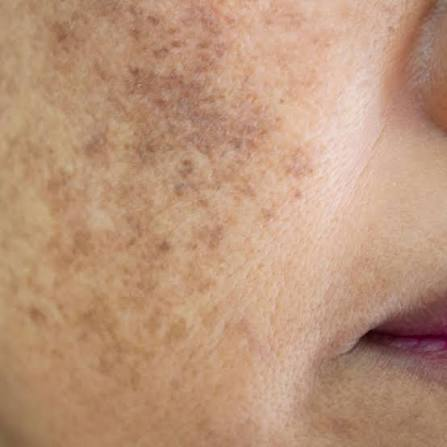
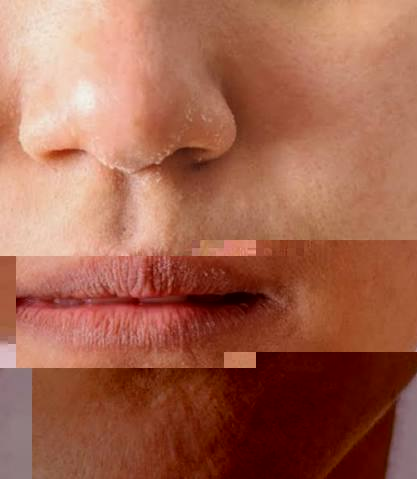

01
INFLAMMATION
Acne & Breakouts
Blackheads · Whiteheads · Clogged pores · Breakouts
Not sure where to start? Tell Glowithm what your skin is experiencing and discover where to begin.
Explore Skin Concerns →Skin concerns rarely appear in isolation. Start by identifying the skin state that feels closest to what you're noticing.
Choose the skin state that best describes what you're experiencing.
Explore a concern to understand what may be contributing to it and what your skin may need.
Blackheads · Whiteheads · Clogged pores · Breakouts

Irritation · Stinging · Reactive-looking skin

Post-breakout marks · Sun spots · Uneven tone



Low radiance · Tired-looking skin · Uneven appearance
Your skin type and sensitivity can change how a concern should be approached. Refine your profile to see more relevant guidance.
Select your concern, skin type, or sensitivity to make your view more specific.
A simple framework for approaching skincare without overwhelming your skin.
Remove buildup without unnecessarily stripping the skin.
Introduce focused ingredients based on what your skin is experiencing.
Keep hydration and barrier support at the center of your routine.
Daily sun protection helps support healthier-looking skin over time.
Explore ingredient intelligence to understand why certain ingredients may be relevant to your skin focus.
A beta hydroxy acid commonly used to help address clogged pores and excess oil.
Explore ingredient →A versatile ingredient used in skincare formulations for barrier support and overall skin appearance.
Explore ingredient →A humectant that helps attract and retain water within the skin.
Explore ingredient →One concern doesn't always exist alone. Glowithm looks at the bigger picture before suggesting what your skin may need.
Tell Glowithm about your skin, your concerns, and the products you already use. Get a routine built around you.
Analyze My Skin →